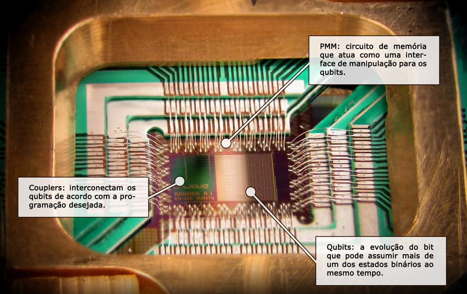
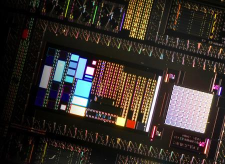
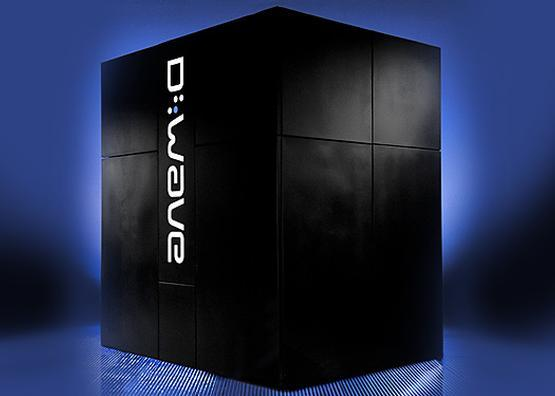

D-Wave One: O primeiro computador quântico lançado no mercado(){
Notícias
Saiba como é formado e como funciona o D-Wave One, o primeiro computador quântico disponibilizado no mercado.

Ilustração de um processador quântico.
Com a promessa de "infinitas possibilidades", a computação quântica parecia ser um sonho distante até pouco tempo atrás, mas hoje está cada vez mais presente em nossa realidade. Vamos explorar nesta reportagem a maior prova disso: o D-Wave One, primeiro computador funcional baseado nos fenômenos quânticos, lançado no primeiro semestre de 2011.
O D-Wave One representa muito mais que um simples avanço tecnológico: ele representa uma quebra de paradigma, a reestruturação quase que total da computação como a conhecemos hoje. É claro que, por ser o pioneiro de "sua geração" o D-Wave One ainda é muito limitado e só é capaz de executar um número relativamente baixo de tarefas. Quanto ao valor, o equipamento custa, atualmente, uma bagatela de aproximadamente U$$ 10.000.000,00 (dez milhões de dólares).
Processando em qubitsO D-Wave One é um computador de alto desempenho projetado para problemas industriais encontrados em várias empresas. Conta com um processador de 128 qubits, que é um chip supercondutor colocado dentro de um sistema criogênico, blindado em um espaço de 10m².

Processador quântico do D-Wave One
visto em detalhe.
Vamos dar um exemplo da usabilidade de um computador quântico. Imagine que você tem dez números de telefone diferentes disponíveis em mãos e que um deles é de sua namorada, ou namorado, mas você não sabe qual. O que você faria para descobrir qual é o correto? Sem dúvida há várias maneiras. Uma delas é conhecida como tentativa e erro, ou seja, você discaria número por número para descobrir qual é o correto. Dessa forma, no pior caso, você tentaria nove ou dez vezes até chegar na resposta correta.
Cansativo, não? Pois bem, um computador quântico é capaz de utilizar o princípio da superposição dos valores nos qubits, ativando assim um dispositivo que produz o efeito de simular um agente observador, que faz com que todas as possibilidades se manifestem simultaneamente, como se estivessem todas acontecendo dentro do mesmo espaço e tempo. Depois, basta escolher o número que trouxe o resultado esperado, ou seja, a confirmação do seu namorado ou namorada do outro lado da linha.
Partes do processador quânticoA parte mais importante de um processador quântico são os qubits, que precisam se comportar como supercondutores para que o fenômeno da superposição aconteça. Até agora, a única forma viável que os engenheiros e cientistas encontraram para alcançar tal feito foi construir os qubits utilizando um metal raro chamado nióbio e baixando a temperatura do aparato até -272.98 graus Célsius, próximo ao zero absoluto.

Ilustração do D-Wave One: o primeiro computador quântico do mercado.
Próximos dos qubits estão os circuitos dos chamados “couplers” (ou “combinadores”). Seu objetivo é interconectar os qubits e forçar a combinação daqueles que estão com dois valores iguais (0-0, 1-1) ou valores opostos (1-0, 0-1), dependendo do propósito para o qual o processador está programado.
Aplicações práticasUm dos primeiros compradores do computador quântico da D-Wave foi a gigante Lockheed Martin, uma das principais representantes da indústria bélica dos Estados Unidos. Lá, a máquina auxilia no cálculo de operações que iriam requerer um grande número de tentativas e permutações, agilizando muito os resultados.
Uma equipe da Universidade de Harvard conseguiu utilizar o D-Wave One para prever as configurações de mais baixa energia de uma proteína dobrada.
Desvendar o processo de dobramento de proteínas é um dos maiores anseios de todos os pesquisadores das chamadas biociências, médicos incluídos, porque isso pode significar a descoberta de formas totalmente novas de lidar com a fisiologia humana.
O problema é que as proteínas são muito complexas, e são inúmeras as formas possíveis que elas podem assumir em seu dobramento. Sendo assim, o computador quântico não resolveu "toda" a questão do dobramento das proteínas, tendo ele trabalhado com alguns poucos aminoácidos.
Mas o objetivo do teste era mostrar que um computador quântico pode lidar com esse tipo de problema. Algumas teorias apontam que os computadores quânticos são muito melhor adaptados para a tarefa do que os computadores eletrônicos clássicos, embora houvesse discordâncias quanto a isso.
No lado positivo, o processador quântico da D-Wave identificou as configurações de aminoácidos e suas interações correspondentes àquilo que seria o meio mais "econômico" do dobramento das proteínas. No lado negativo, ele acertou 13 vezes em 10.000 medições.
Vídeo demonstrando o dobramento protéico
Isso é ruim mesmo considerando que um processador quântico precisa estar sempre lidando com as incertezas - o algoritmo de Shor, por exemplo, rodando em um "processador quântico perfeito", dará a resposta correta em 50% das vezes.
No balanço geral, 13 acertos com um computador quântico de primeira geração parece bom, embora mostre o longo caminho a ser percorrido antes que possamos contar com essas máquinas futuristas para resolver problemas reais de forma completa.
Contudo, não devemos desanimar. O simples fato de um computador quântico, ainda que limitado, já ter sido produzido e já estar sendo utilizado para algumas tarefas práticas, representa um grande avanço e, se tudo continuar assim, dentro de pouquíssimo tempo poderemos ter computadores incrivelmente potentes em nossos lares.
Referências:
Tecmundo
EFísica
Inovação Tecnológica
Wikipédia
}